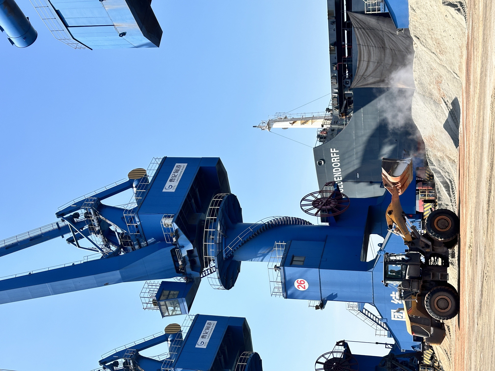

Dry Bulk Fleet Orders and Port Berth Investment Show Trade Is Becoming a Readiness Business
Recent shipping signals suggest bulk-material exporters may compete less on generic tonnage alone and more on vessel fit, berth readiness, cargo handling discipline and repeatable loading execution.
干散货新船订单与港口泊位投资，说明大宗建材贸易正变成一门“准备度生意”
最近几条航运信号说明，大宗建材出口未来拼的可能不再只是“有货就行”，而是更看重船型匹配、泊位准备度、装卸纪律，以及可重复的装船执行能力。

Two recent shipping headlines are worth reading together. COSCO Shipping Development disclosed a major orderbook for 24 dry bulk newbuildings, including 20 vessels around 87,000 dwt and four larger 210,000 dwt units. Around the same time, AD Ports Group and Emirates Global Aluminium announced a US$22m infrastructure plan to enhance a dedicated berth at Khalifa Port. These are not cement stories on the surface, but they matter for cement, clinker, GBFS and GGBFS trade because they point to the same underlying logic: bulk cargo competition is becoming more operationally selective.

1. Fleet investment suggests owners still see value in well-matched bulk demand
A 24-vessel order does not mean every route becomes easy or cheap. But it does show that major players still see long-term value in dry bulk cargoes with dependable demand and practical vessel deployment. For exporters of cementitious materials, this is a reminder that freight competitiveness will not be shaped only by spot softness or short-term sentiment. It will also depend on whether cargo parcels, port draft, loading rates and destination needs fit the available fleet efficiently.
That is useful for suppliers because it shifts the conversation away from generic volume. Not every ton is equally attractive to ship. Cargoes that can be assembled cleanly, loaded predictably and matched to the right vessel class are more bankable than cargoes that create avoidable waiting time or operational uncertainty.
2. Dedicated berth spending shows port readiness is still a hard commercial advantage
The Khalifa Port berth investment matters for a simple reason: it reinforces that bulk trade still rewards infrastructure that reduces friction. Dedicated berths, cleaner cargo interfaces and better turnaround conditions make supply chains more dependable. In export markets, that can matter almost as much as headline price, because demurrage risk, berth delay and cargo-handling inconsistency can quickly erase a small pricing advantage.
For cement, clinker and slag-related cargoes, port readiness is especially important because the product is usually low margin per ton relative to the cost of inefficiency. That means a supplier with disciplined stockyard management, clear documents and loading readiness can defend value better than a supplier who only quotes an attractive FOB number.

3. What this means for cement, clinker and SCM exporters
The practical takeaway is that bulk-material exporters should think like operators, not just sellers. Vessel fit, cargo presentation, load-port coordination and discharge predictability are becoming part of commercial credibility. Buyers may still negotiate on price, but they increasingly prefer suppliers who reduce execution surprises across the whole chain.
Takeaway: recent fleet and berth investment signals suggest the next edge in bulk-material trade will come from readiness. For sellers of cement, clinker, GBFS and GGBFS, the stronger position is not only having product. It is proving that cargo, port and shipment execution can move together without friction.
最近有两条航运新闻，放在一起看很有意思。一条是 COSCO Shipping Development 披露了 24 艘干散货新船订单，其中包括 20 艘约 87,000 载重吨船舶，以及 4 艘更大的 210,000 载重吨船舶。另一条是 AD Ports Group 与 Emirates Global Aluminium 宣布在 Khalifa Port 投入 2,200 万美元，提升专用泊位基础设施。它们表面上都不是“水泥新闻”，但对水泥、熟料、GBFS 和 GGBFS 贸易都很有参考价值，因为两者都在说明同一个逻辑：大宗货物竞争正在变得更看重执行筛选。
1. 船队投资说明：船东仍然看重“匹配度高”的大宗需求
24 艘新船订单并不意味着每条航线都会变得容易或便宜，但它说明大型参与者依然看好那些需求稳定、可实际部署的干散货货流。对胶凝材料出口商来说，这提醒我们：运费竞争力不会只由短期现货情绪决定，也会受到货盘规模、港口吃水、装船效率以及目的港需求是否能与船队高效匹配所影响。
这也把讨论从“只是有量”转向“量能否顺畅执行”。并不是每一吨货对船东都同样有吸引力。那些能够整齐集港、稳定装载、并与合适船型匹配的货盘，会比那些容易造成等待、拖延或操作不确定性的货盘更容易成交。
2. 专用泊位投资说明：港口准备度仍是很硬的商业优势
Khalifa Port 的这笔泊位投资之所以值得看，是因为它再次说明：大宗贸易仍然会奖励那些能降低摩擦的基础设施。专用泊位、更干净的装卸接口、更好的周转条件，都会让供应链更可预测。在出口市场里，这一点有时几乎和表面价格一样重要，因为滞期风险、靠泊延误和装卸不一致，很快就会吃掉那一点点报价优势。
对水泥、熟料和矿渣相关货物来说，港口准备度尤其关键，因为这类产品通常吨值不高，但对效率损失却非常敏感。这意味着，一个堆场管理有纪律、单证清晰、装港准备充分的供应方，往往比一个只报出漂亮 FOB 价格的卖方更能守住价值。
3. 这对水泥、熟料和 SCM 出口商意味着什么
最实际的结论是：大宗建材出口商要更像“运营者”，而不只是“卖货的人”。船型匹配、货物状态、装港协同和卸港可预测性，正在变成商业可信度的一部分。买方当然仍会谈价格，但他们会越来越偏向那些能够减少全链路执行意外的供应方。
结论：最近的新船与泊位投资信号说明，大宗建材贸易的下一层竞争优势，很可能来自“准备度”。对水泥、熟料、GBFS 与 GGBFS 卖方来说，更强的位置不只是手里有货，而是能证明货源、港口与装船执行可以顺畅联动。
Explore products or discuss your inquiry.
If this logistics-readiness signal matters to your sourcing plan, you can review our product pages or contact us with quantity, target specification, loading method and discharge requirements.
Request a quote